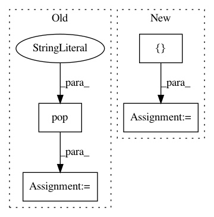

e547a82c24b37c157bc9b40d2724a7b1fd0a7b0f,cesium/featurize.py,,load_featureset,#,367
Before Change
channels = [int(c) if c != "" else "" for c in data.pop("channels")]
columns = pd.MultiIndex.from_tuples(list(zip(features, channels)),
names=["feature", "channel"])
fset = pd.DataFrame(data.pop("values"), index=data.pop("index"),
columns=columns)
return fset, data
After Change
// Transpose to properly handle MultiIndex columns
fset = pd.DataFrame.from_records(data.pop("features"),
index=["feature", "channel"]).T
features, channels = zip(*fset.columns)
channels = [int(c) if c != "" else "" for c in channels]
fset.columns = pd.MultiIndex.from_tuples(list(zip(features, channels)),
names=["feature", "channel"])
In pattern: SUPERPATTERN
Frequency: 4
Non-data size: 4
Instances
Project Name: cesium-ml/cesium
Commit Name: e547a82c24b37c157bc9b40d2724a7b1fd0a7b0f
Time: 2017-04-17
Author: brettnaul@gmail.com
File Name: cesium/featurize.py
Class Name:
Method Name: load_featureset
Project Name: kkroening/ffmpeg-python
Commit Name: 4f97d1d679c3d7aeab703925c665df2370f08980
Time: 2018-06-27
Author: karlk@kralnet.us
File Name: ffmpeg/_view.py
Class Name:
Method Name: view
Project Name: nilmtk/nilmtk
Commit Name: 727196fda06a4c79354ad7f181c279ef78022e55
Time: 2014-11-25
Author: jack-list@xlk.org.uk
File Name: nilmtk/elecmeter.py
Class Name: ElecMeter
Method Name: dropout_rate
Project Name: nilmtk/nilmtk
Commit Name: a583300c421eb31041883e2775280810f1e853ba
Time: 2014-11-25
Author: jack-list@xlk.org.uk
File Name: nilmtk/elecmeter.py
Class Name: ElecMeter
Method Name: good_sections